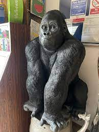

Gibon

Gibon to małpa z rodziny gibonów, zamieszkująca lasy Azji Południowo-Wschodniej. Jest to małpa nadrzewna, charakteryzująca się długimi ramionami, które pozwalają jej na sprawne poruszanie się po drzewach za pomocą chwytania gałęzi. Gibony są znane z umiejętności huśtania się na lianach, poruszając się w sposób przypominający "bujanie" przez dżunglę. Mają małą głowę, wyraźnie zaznaczone uszy i długie, gęste futro. Większość gibonów żyje w monogamicznych parach, a ich dieta składa się głównie z owoców, liści i kwiatów. Gibony są zagrożone wyginięciem z powodu utraty siedlisk oraz nielegalnego polowania.
Gorilla
Gorillas are the largest primates and live in the forests of Africa. There are two types: eastern and western gorillas. They live in family groups led by a "silverback" male. Gorillas are mostly herbivores, eating plants, fruits, and leaves. They're gentle giants but can be very strong when needed. They communicate using sounds, facial expressions, and body language. Sadly, gorillas are endangered due to habitat loss and poaching, but conservation efforts are helping protect them!